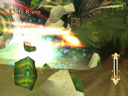
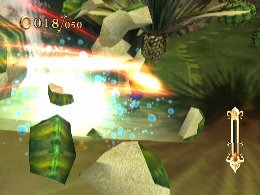
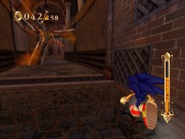
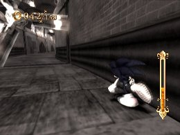

Understanding Speed Breaks and Time Breaks
The Basics
The Speed Break and Time Break become available after you clear 1st Mission of the Evil Foundry. Collect Pearls to build up your Soul Gauge—when the gauge reaches a certain point, you can use a Speed Break or Time Break. You can do this when the gauge turns orange, but the gauge depletes during the Speed Break or Time Break, so the amount of energy built up in the gauge will determine how long the Speed Break or Time Break will last.
You can also pick up Pearls during the Speed Break or Time Break, so you can maximize your Speed Break or Time Break time by fully charging the gauge, then collecting Pearls during the Break.
As you level up, the maximum capacity of your Soul Gauge will increase as well.
The Speed Break emphasizes speed, and allows you to progress quickly while destroying enemies and obstacles (with some exceptions). It’s especially effective in flat areas with many destructible obstacles, such as those in Sand Oasis and Dinosaur Jungle. It’s also useful when you want to save time, or get past difficult obstacles.
But keep in mind that moving left or right is difficult during a Speed Break, so you will need to figure out your path before you use it.
 

The Time Break slows down time around you, and is useful in almost any situation. It’s especially helpful when trying to avoid fast-moving iron balls or rotating blades.

You can also use it when enemies or obstacles suddenly appear, or whenever you feel danger while blasting through a stage.
In addition, the Time Break lets you find hidden Fire Souls, so use it aggressively.

Keep in mind, however, that the controls become a little more difficult to use during Time Breaks, so you’ll need to get used to them. Equipping a Surge-type skill will make the controls easier to handle, so keep it in mind when using a lot of Time Breaks.
 RSS
RSS